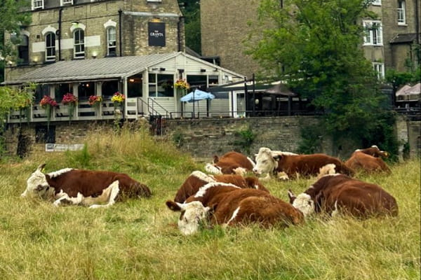
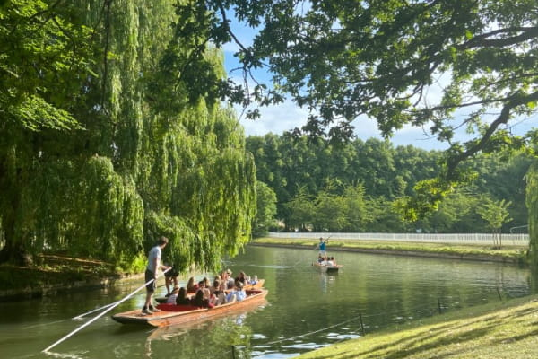
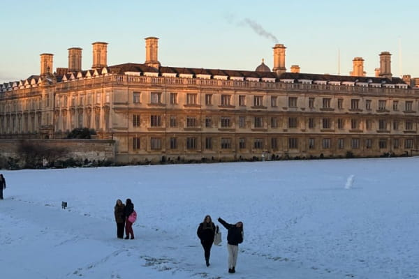
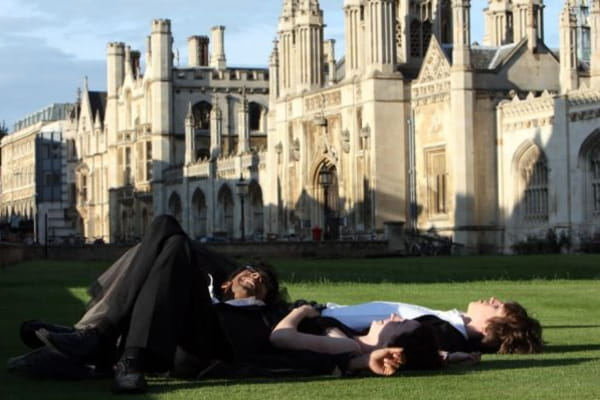
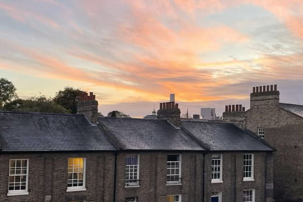
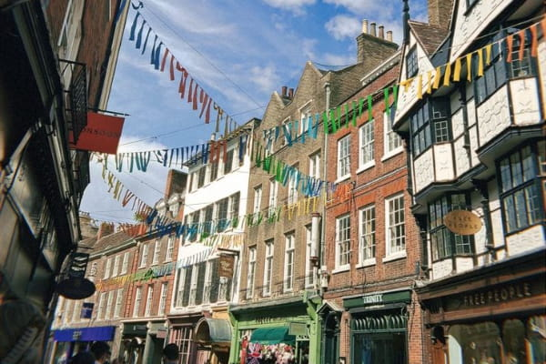

Multimédia
Nesta página encontra conteúdos multimédia.
Fotografias








Vídeo
Poesia
"Taking Leave of Cambridge Again"
By Xu Zhi Mo
Softly I am leaving,
Just as softly as I came;
I softly wave goodbye
To the clouds in the western sky.
The golden willows by the riverside
Are young brides in the setting sun;
Their glittering reflections on the shimmering river
Keep undulating in my heart.
The green tape grass rooted in the soft mud
Sways leisurely in the water;
I am willing to be such a waterweed
In the gentle flow of the River Cam.
That pool in the shade of elm trees
Holds not clear spring water, but a rainbow
Crumpled in the midst of duckweeds,
Where rainbow-like dreams settle.
To seek a dream? Go punting with a long pole,
Upstream to where green grass is greener,
With the punt laden with starlight,
And sing out loud in its radiance.
Yet now I cannot sing out loud,
Peace is my farewell music;
Even crickets are now silent for me,
For Cambridge this evening is silent.
Quietly I am leaving,
Just as quietly as I came;
Gently waving my sleeve,
I am not taking away a single cloud.